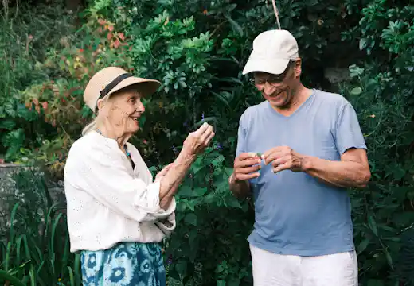
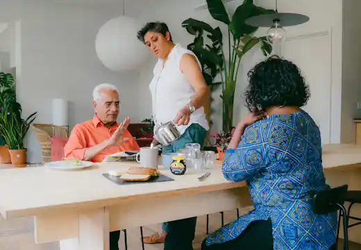
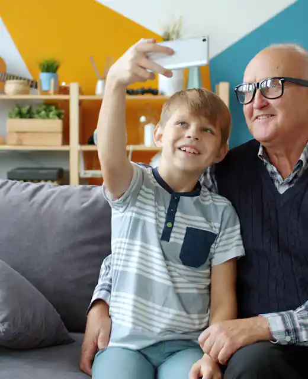

Our mission
Make home the safest place to grow older.
We match skilled, compassionate caregivers to the people who need them, so daily life feels steady, connected, and dignified.
About Stackly
For more than a decade, Stackly Elderly Care has helped older adults live safely, comfortably, and with dignity at home — supported by people who genuinely care.
“We started Stackly because we wanted the kind of care we would want for our own parents.”
Our story
In 2010, our founder Marcus was searching for dependable care for his grandmother and struggled to find support that felt personal, honest, and consistent.
That experience shaped everything that followed. We built Stackly around a simple belief: older adults deserve care that sees their history, respects their routines, and protects their independence — delivered by people who show up the same way, every single visit.
Today, our caregivers support families across dozens of communities, and the founding idea has never changed. Small team, high standards, and a genuine relationship with every person we care for.
What guides us
Three commitments shape every care plan we build and every caregiver we match to a family.
Our mission
We match skilled, compassionate caregivers to the people who need them, so daily life feels steady, connected, and dignified.
Our vision
We imagine a world where every family can find trustworthy care quickly, affordably, and without losing the warmth of being at home.
Our values
Kindness is a skill we hire for and train for. It shows up in the details, from a first hello to how we say goodbye.
Leadership & care team
Clinicians, coordinators, and caregivers who bring both expertise and heart to every family we support.
Founder & Care Director
Guides every care standard at Stackly, with 18 years in senior support services.
Head of Caregiver Experience
Recruits, trains, and mentors the caregivers families come to know and trust.
Director of Clinical Care
Oversees skilled nursing, medication support, and personalised care planning.
Community & Family Liaison
Keeps relatives informed and connected, wherever in the world they live.
If caring comes naturally to you, we would love to meet you. Flexible hours, real training, and a team that supports you.
Our impact
Behind every number is a family who felt a little more at ease and an older adult who felt a little more at home.
Trust & safety
Trust is earned with standards you can verify. Every part of our care is licensed, screened, insured, and reviewed.
Fully compliant with state home-care regulations and independently bonded.
Identity verification, references, and criminal background screening for every caregiver.
Role-specific certifications plus continuous coaching from our clinical team.
Fall prevention, medication oversight, and personalised risk reviews.
Comprehensive liability coverage and a care team available around the clock.
Life at Stackly
A shared meal, a garden walk, a favourite song. We protect the small, ordinary joys that keep life warm.
Move with joyGentle movement and shared laughter
Remember togetherStories are always welcome
Play and connectCompanionship, every day

Stay curiousFresh air and growing things

Share a tableGood food, good company

Stay connectedFamily moments, deeply felt
Kind words from families
A trusted caregiver supports more than a schedule. They support the whole family.
One caring conversation
Tell us a little about your family. We’ll listen, answer your questions, and help you find the right next step — with no pressure at all.